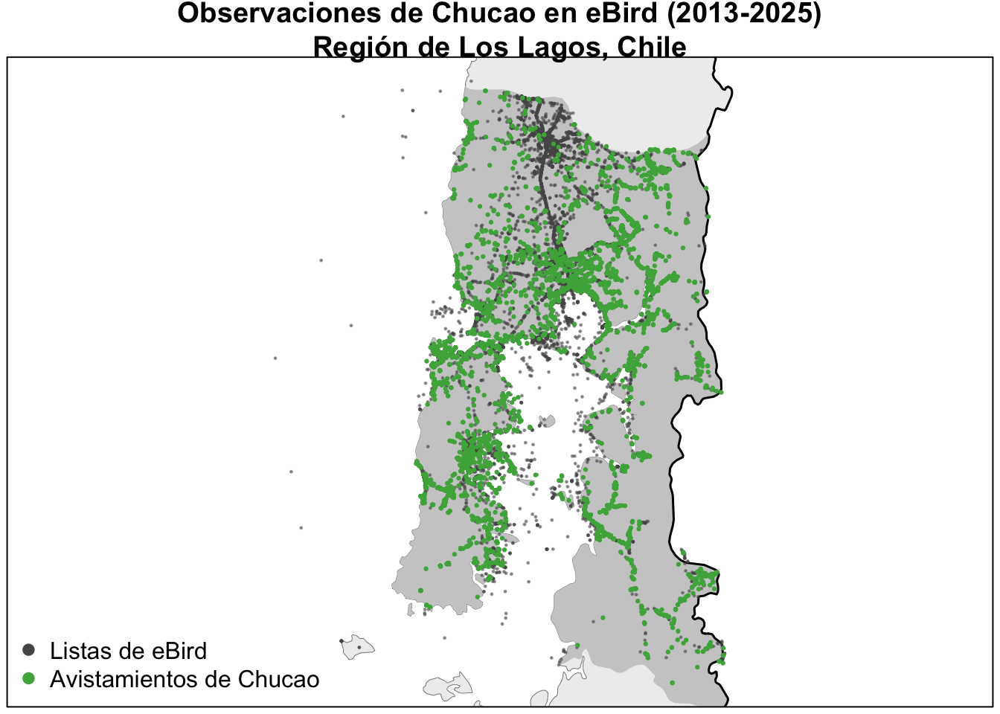

library(auk)
library(dplyr)
library(ggplot2)
library(lubridate)
library(sf)
f_sed <- "data/ebd_CL-LL_chutap1_smp_relSep-2025_sampling.txt" # aquí debemos ajustar el nombre del archivo si trabajaremos con una descarga personal
checklists <- read_sampling(f_sed, unique = FALSE) # leemos el archivo y generamos un objeto que contenga toda la información de las listas
glimpse(checklists) # vemos un resumen rápido del objeto generado con la base de datos
#> Rows: 135,787
#> Columns: 33
#> $ last_edited_date <chr> "2023-03-08 18:35:28.525811", "2023-03-08 18…
#> $ country <chr> "Chile", "Chile", "Chile", "Chile", "Chile",…
#> $ country_code <chr> "CL", "CL", "CL", "CL", "CL", "CL", "CL", "C…
#> $ state <chr> "Los Lagos", "Los Lagos", "Los Lagos", "Los …
#> $ state_code <chr> "CL-LL", "CL-LL", "CL-LL", "CL-LL", "CL-LL",…
#> $ county <chr> "Puerto Montt", "Curaco de Vélez", "Puerto V…
#> $ county_code <chr> "CL-LL-OMO", "CL-LL-CUR", "CL-LL-OVA", "CL-L…
#> $ iba_code <chr> NA, "BIRDLIFE_26907", NA, NA, NA, NA, NA, NA…
#> $ bcr_code <int> NA, NA, NA, NA, NA, NA, NA, NA, NA, NA, NA, …
#> $ usfws_code <chr> NA, NA, NA, NA, NA, NA, NA, NA, NA, NA, NA, …
#> $ atlas_block <chr> NA, NA, NA, NA, NA, NA, NA, NA, NA, NA, NA, …
#> $ locality <chr> "piedra azul", "Curaco de Vélez--Humedales d…
#> $ locality_id <chr> "L19884201", "L20235644", "L20552704", "L205…
#> $ locality_type <chr> "P", "H", "P", "P", "P", "H", "H", "H", "H",…
#> $ latitude <dbl> -41.5, -42.4, -41.3, -42.9, -41.2, -41.3, -4…
#> $ longitude <dbl> -72.8, -73.6, -72.9, -73.6, -74.1, -73.1, -7…
#> $ observation_date <date> 2019-08-15, 2019-01-24, 2019-02-16, 2019-02…
#> $ time_observations_started <chr> "08:00:00", "10:00:00", "17:08:00", "10:04:0…
#> $ observer_id <chr> "obsr2818200", "obsr1166222", "obsr279749", …
#> $ observer_orcid_id <chr> NA, NA, NA, NA, NA, NA, NA, NA, NA, NA, NA, …
#> $ sampling_event_identifier <chr> "S114001497", "S118804608", "S116936975", "S…
#> $ observation_type <chr> "Stationary", "Traveling", "Stationary", "St…
#> $ protocol_name <chr> "Stationary", "Traveling", "Stationary", "St…
#> $ protocol_code <chr> "P21", "P22", "P21", "P21", "P20", "P22", "P…
#> $ project_names <chr> NA, NA, NA, NA, NA, NA, NA, NA, NA, NA, NA, …
#> $ project_identifiers <chr> NA, NA, NA, NA, NA, NA, NA, NA, NA, NA, NA, …
#> $ duration_minutes <int> 480, 60, 5, 10, NA, 46, 36, 39, 12, 38, 124,…
#> $ effort_distance_km <dbl> NA, 1.000, NA, NA, NA, 0.253, 1.350, 0.270, …
#> $ effort_area_ha <dbl> NA, NA, NA, NA, NA, NA, NA, NA, NA, NA, NA, …
#> $ number_observers <int> 1, 1, 1, 1, NA, 4, 5, 4, 4, 4, 7, 3, 7, 4, 3…
#> $ all_species_reported <lgl> TRUE, TRUE, TRUE, TRUE, FALSE, TRUE, TRUE, T…
#> $ group_identifier <chr> NA, NA, NA, NA, NA, "G4267503", "G4594512", …
#> $ checklist_comments <chr> "observada desde mi ventan en carretera aust…2 Best Practices for using eBird Data
En este capítulo, destacaremos algunos de los desafíos asociados con el uso de datos de eBird. Luego mostraremos cómo importar los datos en R, aplicar filtros y usar listas completas para producir datos de detección/no detección adecuados para modelar la distribución y abundancia de especies. Finalmente, realizaremos algunos pasos de pre-procesamiento necesarios para asegurar el análisis apropiado de los datos.
Usamos los términos detección y no detección en lugar de los términos más comunes presencia y ausencia a lo largo de esta guía para reflejar el hecho de que un conteo inferido de cero no necesariamente significa que una especie está ausente, solo que no fue detectada en la lista en cuestión.
2.1 Desafíos asociados con datos de eBird
A pesar de las fortalezas de los datos de eBird, las observaciones de especies recolectadas a través de proyectos de ciencia ciudadana presentan una serie de desafíos que no se encuentran en datos científicos convencionales. Alguno de los siguientes desafíos asociados con estos datos que serán abordados a lo largo de este curso son:
Sesgo taxonómico: los participantes a menudo tienen preferencias por ciertas especies, lo que puede llevar a un registro preferencial de algunas especies sobre otras (Greenwood 2007; Tulloch and Szabo 2012). Restringir los análisis a listas completas mitiga en gran medida este problema.
Sesgo espacial: la mayoría de los participantes en proyectos de ciencia ciudadana muestrean cerca de sus hogares (Luck et al. 2004), en áreas de fácil acceso como bordes de carreteras (Kadmon, Farber, and Danin 2004), o en áreas y hábitats de alta biodiversidad conocida (Prendergast et al. 1993). Un método simple para reducir el sesgo espacial es crear una grilla sobre la región de interés y muestrear un número determinado de listas desde cada celda de la grilla.
Sesgo temporal: los participantes muestrean preferentemente cuando están disponibles, como los fines de semana (Courter et al. 2013), y en épocas del año cuando esperan observar más aves; notablemente, en Estados Unidos hay un gran aumento en envíos de eBird durante la migración de primavera (Sullivan et al. 2014). Además, eBird ha aumentado constantemente en popularidad con el tiempo, lo que lleva a un fuerte sesgo hacia más datos en años recientes. Para abordar el sesgo de fin de semana, recomendamos usar una escala temporal de una semana o varias semanas para la mayoría de los análisis. Los sesgos temporales a escalas más largas pueden abordarse submuestreando los datos para producir una distribución temporal más uniforme.
Desbalance de clases: las especies de aves que son raras o difíciles de detectar pueden tener datos con alto desbalance de clases, con muchas más listas con no detecciones que con detecciones. Para estas especies, un modelo de distribución que predice que la especie está ausente en todas partes tendrá alta precisión, pero ningún valor ecológico. Seguiremos los métodos para abordar el desbalance de clases propuestos por Robinson et al. (2018), muestreando los datos para aumentar artificialmente la prevalencia de detecciones antes del modelado.
Precisión espacial: la ubicación espacial de una lista de eBird se proporciona como un único punto latitud-longitud; sin embargo, esto puede no ser preciso por dos razones principales. Primero, para listas en tránsito, esta ubicación representa solo un punto en el recorrido. Segundo, las listas de eBird a menudo se asignan a un hotspot (una ubicación común para todos los observadores que visitan un sitio popular) en lugar de su ubicación verdadera. Por estas razones, no es apropiado alinear las ubicaciones de eBird con variables de hábitat muy precisas, y recomendamos resumir variables dentro de un vecindario alrededor de la ubicación de la lista.
Variación en detectabilidad/esfuerzo: la detectabilidad describe la probabilidad de que una especie este presente en un área y sea detectada e identificada. La detectabilidad varía según la estación, hábitat y especie (Johnston et al. 2014, 2018). Además, los datos de eBird se recolectan con alta variación en esfuerzo, hora del día, número de observadores y condiciones externas como el clima, todo lo cual puede afectar la detectabilidad de las especies (Ellis and Taylor 2018; Oliveira et al. 2018). Por lo tanto, la detectabilidad es particularmente importante de considerar al comparar entre estaciones, hábitats o especies. Dado que eBird usa un protocolo semi-estructurado que recolecta datos sobre el proceso de observación, podremos controlar una mayor proporción de esta variación en nuestros análisis.
El resto de esta guía demostrará cómo abordar estos desafíos usando datos reales de eBird para producir estimaciones confiables de distribuciones de especies. En general, tomaremos un enfoque de dos frentes para lidiar con datos no estructurados y maximizar el valor de los datos de ciencia ciudadana: imponer más estructura en los datos mediante filtrado e incluir variables predictoras que describan el proceso de observación en nuestros modelos para controlar la variación restante.
2.2 Importar datos de eBird en R
La clase anterior aprendimos a descargar datos desde eBird, obteniendo dos archivos de texto separados por tabulaciones, uno para el EBD (datos de observación) y uno para el SED (datos de lista). Ahora, iniciaremos un nuevo proyecto de RStudio y agregaremos los dos archivos de texto descargados en el subdirectorio data/ del directorio del proyecto.
El paquete de R auk está diseñado específicamente para trabajar con datos de eBird. Incluye las funciones read_ebd() and read_sampling() para importar el EBD y SED, respectivamente, en R.
Primero vamos a importar los datos de listas (SED).
Checkpoint
Tómate un tiempo para explorar las variables en el conjunto de datos de listas. Si no estás seguro acerca de alguna de las variables, puedes consultar el documento pdf de metadatos que viene con la descarga de datos (eBird_BaeBird_Basic_Dataset_Metadata_v1.16.pdf) o con la versión en español que puedes encontrar en la carpeta drive del curso (Manual-de-uso-base-de-datos-eBird-Chile-version-agosto-2025.pdf).
Para algunas aplicaciones, solo se requieren los datos de listas. Por ejemplo, los datos de listas se pueden usar para investigar la distribución espacial y temporal de datos eBird dentro de una región. Este conjunto de datos también puede ser útil para explorar cuánta variación hay en las variables de esfuerzo de observación e identificar listas que tienen baja precisión espacial o temporal.
Solución
Casi el 90% de las listas tienen menos de 10 km de longitud; sin embargo, algunas listas alcanzan hasta los 80 km en distancia. Las listas de verificación con largas distancias de viaje tienen una presición espacial menor, por lo que no suelen usarse en ciertos análisis y por lo tanto se eliminan antes de este.
checklists_traveling <- filter(checklists, protocol_name == "Traveling") #Aquí filtramos por el tipo de protocolo, en este caso, "con desplazamiento"
ggplot(checklists_traveling) + # objeto con datos que queremos graficar
aes(x = effort_distance_km) + # variable que queremos en el eje x (distancia recorrida)
geom_histogram(binwidth = 5) + # ancho de los intervalos del histograma
scale_y_continuous(limits = c(0, NA), labels = scales::comma) + # ajustamos el eje y para que comience en 0 y formateamos los números con separador de miles
labs(x = "Distance traveled [km]", # etiqueta del eje x
y = "# of eBird checklists", # etiqueta del eje y
title = "Distribución de la distancia recorrida en las listas de eBird") # título del gráfico
#> Warning: Removed 71 rows containing non-finite outside the scale range
#> (`stat_bin()`).
Posiblemente notaron que en el ejercicio anterior les apareció la advertencia “Removed 71 rows containing non-finite outside the scale range (stat_bin()).”. Este aviso nos indica que 71 filas de nuestra base de datos no fueron consideradas para el histograma porque el valor de effort_distance_km es no finito (NA, NaN o Inf). Esto no es grave, podemos revisar que ocurre con esas listas y corregir en caso de que sea necesario.
Ahora, importemos los datos de observación (EBD).
f_ebd <- "data/ebd_CL-LL_chutap1_smp_relSep-2025.txt" #Aquí debemos ajustar el nombre del archivo si trabajaremos con una descarga personal
observations <- read_ebd(f_ebd, unique = FALSE, rollup = FALSE) # leemos el archivo y generamos un objeto que contenga toda la información de las observaciones
glimpse(observations) # resumen rápido del objeto generado
#> Rows: 21,792
#> Columns: 52
#> $ global_unique_identifier <chr> "URN:CornellLabOfOrnithology:EBIRD:OBS22384…
#> $ last_edited_date <chr> "2024-10-14 12:41:13.045987", "2023-03-08 1…
#> $ taxonomic_order <int> 14232, 14232, 14232, 14232, 14232, 14232, 1…
#> $ category <chr> "species", "species", "species", "species",…
#> $ taxon_concept_id <chr> "avibase-23178B5E", "avibase-23178B5E", "av…
#> $ common_name <chr> "Chucao Tapaculo", "Chucao Tapaculo", "Chuc…
#> $ scientific_name <chr> "Scelorchilus rubecula", "Scelorchilus rube…
#> $ subspecies_common_name <chr> NA, NA, NA, NA, NA, NA, NA, NA, NA, NA, NA,…
#> $ subspecies_scientific_name <chr> NA, NA, NA, NA, NA, NA, NA, NA, NA, NA, NA,…
#> $ exotic_code <chr> NA, NA, NA, NA, NA, NA, NA, NA, NA, NA, NA,…
#> $ observation_count <chr> "2", "1", "1", "1", "2", "4", "1", "3", "1"…
#> $ breeding_code <chr> NA, NA, NA, NA, NA, NA, NA, NA, NA, NA, NA,…
#> $ breeding_category <chr> NA, NA, NA, NA, NA, NA, NA, NA, NA, NA, NA,…
#> $ behavior_code <chr> NA, NA, NA, NA, NA, NA, NA, NA, NA, NA, NA,…
#> $ age_sex <chr> NA, NA, NA, NA, NA, NA, NA, NA, NA, NA, NA,…
#> $ country <chr> "Chile", "Chile", "Chile", "Chile", "Chile"…
#> $ country_code <chr> "CL", "CL", "CL", "CL", "CL", "CL", "CL", "…
#> $ state <chr> "Los Lagos", "Los Lagos", "Los Lagos", "Los…
#> $ state_code <chr> "CL-LL", "CL-LL", "CL-LL", "CL-LL", "CL-LL"…
#> $ county <chr> "Ancud", "Ancud", "Ancud", "Ancud", "Ancud"…
#> $ county_code <chr> "CL-LL-ANC", "CL-LL-ANC", "CL-LL-ANC", "CL-…
#> $ iba_code <chr> NA, NA, NA, NA, NA, NA, NA, NA, NA, NA, NA,…
#> $ bcr_code <int> NA, NA, NA, NA, NA, NA, NA, NA, NA, NA, NA,…
#> $ usfws_code <chr> NA, NA, NA, NA, NA, NA, NA, NA, NA, NA, NA,…
#> $ atlas_block <chr> NA, NA, NA, NA, NA, NA, NA, NA, NA, NA, NA,…
#> $ locality <chr> "Chiloe Island, first year, Rodrigo's", "Ch…
#> $ locality_id <chr> "L2501072", "L2501072", "L2501072", "L25010…
#> $ locality_type <chr> "P", "P", "P", "P", "P", "P", "P", "P", "P"…
#> $ latitude <dbl> -41.9, -41.9, -41.9, -41.9, -41.9, -41.9, -…
#> $ longitude <dbl> -73.5, -73.5, -73.5, -73.5, -73.5, -73.5, -…
#> $ observation_date <date> 1994-10-25, 1994-11-08, 1994-11-26, 1994-1…
#> $ time_observations_started <chr> "07:30:00", "07:30:00", "07:30:00", "07:30:…
#> $ observer_id <chr> "obsr213338", "obsr213338", "obsr213338", "…
#> $ observer_orcid_id <chr> NA, NA, NA, NA, NA, NA, NA, NA, NA, NA, NA,…
#> $ sampling_event_identifier <chr> "S16187694", "S16187936", "S16188333", "S16…
#> $ observation_type <chr> "Traveling", "Traveling", "Traveling", "Tra…
#> $ protocol_name <chr> "Traveling", "Traveling", "Traveling", "Tra…
#> $ protocol_code <chr> "P22", "P22", "P22", "P22", "P22", "P22", "…
#> $ project_names <chr> NA, NA, NA, NA, NA, NA, NA, NA, NA, NA, NA,…
#> $ project_identifiers <chr> NA, NA, NA, NA, NA, NA, NA, NA, NA, NA, NA,…
#> $ duration_minutes <int> 120, 240, 180, 300, 240, 300, 240, 300, 10,…
#> $ effort_distance_km <dbl> 8.05, 8.05, 6.44, 8.05, 8.05, 8.05, 32.19, …
#> $ effort_area_ha <dbl> NA, NA, NA, NA, NA, NA, NA, NA, NA, NA, NA,…
#> $ number_observers <int> 2, 2, 3, 2, 2, 2, 6, 2, 1, 2, 1, 3, 1, 3, 3…
#> $ all_species_reported <lgl> TRUE, TRUE, TRUE, TRUE, TRUE, TRUE, TRUE, T…
#> $ group_identifier <chr> NA, NA, NA, NA, NA, NA, NA, NA, NA, NA, NA,…
#> $ has_media <lgl> FALSE, FALSE, FALSE, FALSE, FALSE, FALSE, F…
#> $ approved <lgl> TRUE, TRUE, TRUE, TRUE, TRUE, TRUE, TRUE, T…
#> $ reviewed <lgl> FALSE, FALSE, FALSE, FALSE, FALSE, FALSE, F…
#> $ reason <chr> NA, NA, NA, NA, NA, NA, NA, NA, NA, NA, NA,…
#> $ checklist_comments <chr> NA, NA, NA, NA, NA, NA, NA, NA, NA, NA, NA,…
#> $ species_comments <chr> "courtship", "first nest! Chucao in & out, …
Checkpoint
Tómate un tiempo para explorar las variables en el conjunto de datos de observación. Observa que el EBD duplica muchas de las variables a nivel de lista del SED.
Cuando leemos los datos en R, usamos unique = FALSE y rollup = FALSE. Por defecto, las funciones de lectura en el paquete auk realizan dos pasos importantes de preprocesamiento: combinar listas compartidas duplicadas y consolidación taxonómica. Intencionalmente desactivamos esta funcionalidad con fines demostrativos.
2.2.2 Rollup taxonómico
Las observaciones de eBird se pueden hacer a niveles por debajo de especie (por ejemplo, subespecie) o por encima de especie (por ejemplo, un ave que fue identificada como un pato, pero no se pudo determinar la especie); sin embargo, para la mayoría de los usos querremos observaciones a nivel de especie. Esto es especialmente cierto si queremos producir datos de detección/no detección a partir de listas completas, porque “completo” solo aplica a nivel de especie.
Tip
En el conjunto de datos de ejemplo utilizado para este curso, estos problemas taxonómicos no se aplican. Hemos solicitado observaciones de chucao, por lo que no hemos recibido ninguna observación de taxones por encima de la especie, ni tampoco subespecies. Sin embargo, en muchas otras situaciones, estos problemas taxonómicos pueden ser importantes. Por ejemplo, esta lista tiene 1 tijeral común y 1 tijeral común (aegithaloides). auk_rollup() combina las dos observaciones en una sola observación de tijeral común.
La función auk_rollup() elimina todas las observaciones no identificables a nivel de especie y consolida todas las observaciones reportadas por debajo de especie al nivel de especie.
Para este ejercicio trabajaremos con el tijeral, por lo que antes de realizar el rollup debemos cargar la base de datos del tijeral en Chile (ebd_CL_pmtspi1_smp_relSep-2025.txt).
ft_ebd <- "data/ebd_CL_pmtspi1_smp_relSep-2025.txt"
tijeral <- read_ebd(ft_ebd, unique = FALSE, rollup = FALSE)
observations_rollup <- auk_rollup(tijeral)
# uno de los ejemplos, revisamos la lista antes del rollup y comparamos con como queda la información luego del rollup.
tijeral %>%
filter(sampling_event_identifier == "S109437960") %>%
select(sampling_event_identifier, common_name, subspecies_common_name,
observation_count)
#> # A tibble: 2 × 4
#> sampling_event_identifier common_name subspecies_common_name observation_count
#> <chr> <chr> <chr> <chr>
#> 1 S109437960 Plain-mant… Plain-mantled Tit-Spi… 1
#> 2 S109437960 Plain-mant… <NA> 1
observations_rollup %>%
filter(sampling_event_identifier == "S109437960") %>%
select(sampling_event_identifier, common_name,
observation_count)
#> # A tibble: 1 × 3
#> sampling_event_identifier common_name observation_count
#> <chr> <chr> <chr>
#> 1 S109437960 Plain-mantled Tit-Spinetail 2
Tip
Si múltiples taxones en una sola lista se consolidan a la misma especie, auk_rollup() intenta combinarlos inteligentemente. Si cada observación tiene un conteo, esos conteos se suman, pero si alguna de las observaciones carece de conteo (es decir, el conteo es “X”) la observación combinada también recibe una “X”. En la lista de ejemplo del Tip anterior, con dos taxones consolidándose a tijeral común, auk_rollup() suma los dos conteos para obtener 2 tijeral común (1 + 1).
2.3 Generación de datos de detección/no detección
Las listas completas de eBird son extremadamente valiosas porque, para todas las especies que no fueron reportadas, podemos inferir conteos de 0. Esto nos permite convertir datos de solo presencia a datos de detección/no detección, lo que nos permite realizar análisis mucho más robustos. Ten en cuenta que no usamos el término presencia/ausencia, porque una no detección no necesariamente implica que la especie estuvo ausente, solo que el observador no la detectó e identificó.
Nos referimos al proceso de producir datos de detección/no detección como “llenar con ceros” los datos de eBird (zero-filling), porque estamos llenando los ceros faltantes. Leeremos los datos de eBird en R nuevamente, y filtraremos solo las listas completas. Luego, usaremos la función auk_zerofill() para generar datos de detección/no detección. Ten en cuenta que las listas compartidas se combinan y la consolidación taxonómica se realiza por defecto al usar las funciones read_*() de auk.
# importamos los datos de los listados (SED)
checklists <- read_sampling(f_sed) %>%
# seleccionamos solo los listados completos
filter(all_species_reported)
# importamos los datos de observación (EBD)
observations <- read_ebd(f_ebd) %>%
# seleccionamos solo los listados completos
filter(all_species_reported)
# uso de la función zero-fill para generar los datos de detección/no detección
zf <- auk_zerofill(observations, checklists, collapse = TRUE)
glimpse(zf)
#> Rows: 80,577
#> Columns: 41
#> $ checklist_id <chr> "S114001497", "S118804608", "S116936975", "S…
#> $ last_edited_date <chr> "2023-03-08 18:35:28.525811", "2023-03-08 18…
#> $ country <chr> "Chile", "Chile", "Chile", "Chile", "Chile",…
#> $ country_code <chr> "CL", "CL", "CL", "CL", "CL", "CL", "CL", "C…
#> $ state <chr> "Los Lagos", "Los Lagos", "Los Lagos", "Los …
#> $ state_code <chr> "CL-LL", "CL-LL", "CL-LL", "CL-LL", "CL-LL",…
#> $ county <chr> "Puerto Montt", "Curaco de Vélez", "Puerto V…
#> $ county_code <chr> "CL-LL-OMO", "CL-LL-CUR", "CL-LL-OVA", "CL-L…
#> $ iba_code <chr> NA, "BIRDLIFE_26907", NA, NA, NA, NA, NA, NA…
#> $ bcr_code <int> NA, NA, NA, NA, NA, NA, NA, NA, NA, NA, NA, …
#> $ usfws_code <chr> NA, NA, NA, NA, NA, NA, NA, NA, NA, NA, NA, …
#> $ atlas_block <chr> NA, NA, NA, NA, NA, NA, NA, NA, NA, NA, NA, …
#> $ locality <chr> "piedra azul", "Curaco de Vélez--Humedales d…
#> $ locality_id <chr> "L19884201", "L20235644", "L20552704", "L205…
#> $ locality_type <chr> "P", "H", "P", "P", "H", "H", "H", "H", "H",…
#> $ latitude <dbl> -41.5, -42.4, -41.3, -42.9, -41.3, -41.3, -4…
#> $ longitude <dbl> -72.8, -73.6, -72.9, -73.6, -73.1, -73.1, -7…
#> $ observation_date <date> 2019-08-15, 2019-01-24, 2019-02-16, 2019-02…
#> $ time_observations_started <chr> "08:00:00", "10:00:00", "17:08:00", "10:04:0…
#> $ observer_id <chr> "obsr2818200", "obsr1166222", "obsr279749", …
#> $ observer_orcid_id <chr> NA, NA, NA, NA, NA, NA, NA, NA, NA, NA, NA, …
#> $ sampling_event_identifier <chr> "S114001497", "S118804608", "S116936975", "S…
#> $ observation_type <chr> "Stationary", "Traveling", "Stationary", "St…
#> $ protocol_name <chr> "Stationary", "Traveling", "Stationary", "St…
#> $ protocol_code <chr> "P21", "P22", "P21", "P21", "P62", "P22", "P…
#> $ project_names <chr> NA, NA, NA, NA, NA, NA, NA, NA, NA, NA, NA, …
#> $ project_identifiers <chr> NA, NA, NA, NA, NA, NA, NA, NA, NA, NA, NA, …
#> $ duration_minutes <int> 480, 60, 5, 10, NA, 19, 22, 30, 23, 132, 2, …
#> $ effort_distance_km <dbl> NA, 1.000, NA, NA, NA, 0.308, 1.850, NA, 3.2…
#> $ effort_area_ha <dbl> NA, NA, NA, NA, NA, NA, NA, NA, NA, NA, NA, …
#> $ number_observers <int> 1, 1, 1, 1, 3, 1, 1, 1, 1, 2, 1, 1, 1, 1, 1,…
#> $ all_species_reported <lgl> TRUE, TRUE, TRUE, TRUE, TRUE, TRUE, TRUE, TR…
#> $ group_identifier <chr> NA, NA, NA, NA, NA, NA, NA, NA, NA, NA, NA, …
#> $ checklist_comments <chr> "observada desde mi ventan en carretera aust…
#> $ scientific_name <chr> "Scelorchilus rubecula", "Scelorchilus rubec…
#> $ breeding_code <chr> NA, NA, NA, NA, NA, NA, NA, NA, NA, NA, NA, …
#> $ breeding_category <chr> NA, NA, NA, NA, NA, NA, NA, NA, NA, NA, NA, …
#> $ behavior_code <chr> NA, NA, NA, NA, NA, NA, NA, NA, NA, NA, NA, …
#> $ age_sex <chr> NA, NA, NA, NA, NA, NA, NA, NA, NA, NA, NA, …
#> $ observation_count <chr> "0", "0", "0", "0", "0", "0", "0", "0", "0",…
#> $ species_observed <lgl> FALSE, FALSE, FALSE, FALSE, FALSE, FALSE, FA…La variable observation_count tiene conteos verdaderos así como también “X”, estas indican que la especie fue detectada pero no se contó el número de individuos. auk_zerofill() agrega una nueva columna binaria, species_observed, indicando si la especie fue detectada o no.
select(zf, observation_count, species_observed) %>%
head(10) # observamos los primero 10 valores de las columnas con conteos y si se detectó la especie o no
#> # A tibble: 10 × 2
#> observation_count species_observed
#> <chr> <lgl>
#> 1 0 FALSE
#> 2 0 FALSE
#> 3 0 FALSE
#> 4 0 FALSE
#> 5 0 FALSE
#> 6 0 FALSE
#> # ℹ 4 more rowsConvirtamos las “X” en NAs y transformemos observation_count en una variable entera.
zf$observation_count <- if_else(zf$observation_count == "X",
NA_character_, zf$observation_count) %>%
as.integer()
select(zf, observation_count, species_observed) %>%
head(10)
#> # A tibble: 10 × 2
#> observation_count species_observed
#> <int> <lgl>
#> 1 0 FALSE
#> 2 0 FALSE
#> 3 0 FALSE
#> 4 0 FALSE
#> 5 0 FALSE
#> 6 0 FALSE
#> # ℹ 4 more rows2.4 Filtrado de datos
Ahora que tienes un conjunto de datos de detección/no detección, es probable que quieras hacer algo con él. Por ejemplo, puedes querer hacer un mapa, identificar áreas prioritarias para una especie o entrenar un modelo de distribución de especies. Independientemente de la aplicación específica, es probable que primero se requiera algún filtrado de los datos. Algunas de las formas en que puedes querer filtrar los datos de eBird incluyen:
- Filtrado temporal: filtrar los datos a un rango específico de años o a una época específica del año.
- Filtrado espacial: filtrar los datos para enfocarse en una región específica, por ejemplo, un área protegida.
- Aumento de la precisión: algunas listas de eBird son bastante largas en distancia o duración, lo que lleva a imprecisión espacial o temporal. Al eliminar listas más largas podemos aumentar la precisión espacial del conjunto de datos.
- Reducción de la variación en el esfuerzo: a diferencia de los estudios científicos estructurados, los datos se pueden enviar a eBird usando una variedad de protocolos y hay una variación significativa en el esfuerzo entre listas en el conjunto de datos de eBird. La variación en el protocolo y el esfuerzo conduce a variación en la detectabilidad (más esfuerzo generalmente conduce a mayor detectabilidad). Podemos elegir imponer más estructura en el conjunto de datos de eBird filtrando para reducir la variación en protocolo y esfuerzo.
El filtrado específico que apliques dependerá de cómo pretendas usar los datos de eBird. Sin embargo, para este ejemplo, filtremos los datos de eBird solo a listas con desplazamiento y estacionarias de 2013-2025 que sean de menos de 6 horas de duración y 10 km de longitud.
zf_filtered <- zf %>%
filter(year(observation_date) >= 2013, year(observation_date) <= 2025, # filtramos por años de interés
observation_type %in% c("Traveling", "Stationary"), # filtramos por tipo de observación
duration_minutes < 6 * 60, # filtramos listas que tengan una duración menor a 6 horas
effort_distance_km < 10 | observation_type == "Stationary") # filtramos listas con distancias recorridas menores a 10 km
nrow(zf)
#> [1] 80577
nrow(zf_filtered)
#> [1] 75362Redujimos el número de listas en 5,215 pero las listas restantes son de mayor calidad.
Finalmente, muchas de las columnas en este data frame son innecesarias o redundantes, así que seleccionaremos solo las columnas que necesitamos.
checklists_zf <- zf_filtered %>%
select(checklist_id,
latitude, longitude,
observation_date, time_observations_started,
observation_type,
duration_minutes, effort_distance_km, number_observers,
observation_count, species_observed)2.5 Aplicaciones
2.5.1 Frecuencia de detección
Lo más simple que podemos hacer con estas observaciones de eBird es estimar la frecuencia de detección del chucao en la región de Los Lagos. Esta es la proporción de listas de eBird en la región que detectaron la especie. species_observed es una columna binaria TRUE/FALSE que indica si se detectó la especie y R trata TRUE como 1 y FALSE como 0, por lo que podemos tomar el promedio de esta columna para obtener la frecuencia de detección.
mean(checklists_zf$species_observed)
#> [1] 0.168Entonces, el chucao es bastante común dentro de esta región, con un 0.17% de las listas detectando la especie. La frecuencia de detección se puede usar para comparar la prevalencia de una especie entre regiones o a lo largo del tiempo. Veamos cómo cambia la frecuencia de detección a lo largo de los meses del año.
monthly_detection <- checklists_zf %>%
mutate(month = month(observation_date)) %>%
group_by(month) %>%
summarize(detection_frequency = mean(species_observed))
# plot monthly detection frequency
ggplot(monthly_detection) +
aes(x = month, y = detection_frequency) +
geom_line() +
geom_point() +
scale_x_continuous(breaks = 1:12) +
scale_y_continuous(labels = scales::percent) +
labs(x = "Mes del año",
y = "Frecuencia de detección",
title = "Frecuencia de detección mensual del chucao",
subtitle = "Los Lagos, Chile")
Basándose en este gráfico, el chucao parece ser más detectado entre diciembre y marzo.
Solución
Existe una variabilidad en el envío de listas por mes, con menos del doble de listas en enero comparado con junio. Si examináramos el número mensual de detecciones utilizando únicamente datos de presencia, esperaríamos más detecciones en los meses con mayor cantidad de listas, incluso si la prevalencia del chucao permanece constante.
monthly_checklists <- count(checklists_zf, month = month(observation_date))
# plot monthly number of checklists
ggplot(monthly_checklists) +
aes(x = month, y = n) +
geom_line() +
geom_point() +
scale_x_continuous(breaks = 1:12) +
scale_y_continuous(limits = c(0, NA), labels = scales::comma) +
labs(x = "Mes del año",
y = "Número de listados en eBird",
title = "Listados mensuales subidos a eBird en Los Lagos")
2.5.2 Conversión a formato espacial {#sec-ebird-appli = ions-spatial}
Muchas aplicaciones de datos de eBird requieren convertir los datos en un formato explícitamente espacial, por ejemplo, para hacer un mapa o filtrar las observaciones solo a aquellas dentro de un polígono para un área protegida. El paquete de R sf se puede usar para representar puntos, líneas y polígonos espaciales en R. Podemos convertir el data frame de las listas a un objeto sf usando la latitud y longitud.
checklists_sf <- st_as_sf(checklists_zf, coords = c("longitude", "latitude"),
# 4326 is the code for an unprojected lon/lat
# coordiante reference system
crs = 4326)
print(checklists_sf)
#> Simple feature collection with 75362 features and 9 fields
#> Geometry type: POINT
#> Dimension: XY
#> Bounding box: xmin: -75.3 ymin: -43.8 xmax: -71.7 ymax: -40.2
#> Geodetic CRS: WGS 84
#> # A tibble: 75,362 × 10
#> checklist_id observation_date time_observations_started observation_type
#> * <chr> <date> <chr> <chr>
#> 1 S118804608 2019-01-24 10:00:00 Traveling
#> 2 S116936975 2019-02-16 17:08:00 Stationary
#> 3 S116936842 2019-02-13 10:04:00 Stationary
#> 4 S59435786 2019-09-01 15:09:00 Traveling
#> 5 S58442786 2019-07-25 13:47:00 Traveling
#> 6 S62449405 2019-12-18 16:40:00 Stationary
#> # ℹ 75,356 more rows
#> # ℹ 6 more variables: duration_minutes <int>, effort_distance_km <dbl>,
#> # number_observers <int>, observation_count <int>, species_observed <lgl>,
#> # geometry <POINT [°]>Imagina que solo estamos interesados en observaciones dentro de 50 km de Dalcahue, Chile. Podemos usar sf para generar un círculo de radio 50 km centrado en Dalcahue, y luego filtrar las observaciones que caen dentro del círculo.
# Asignamos las coordenadas de nuestro punto de interés, en este caso las coordenadas de Dalcahue
dalcahue_point <- st_sfc(st_point(c(-73.6473, -42.3796)), crs = 4326)
# Generamos un circulo a partir del punto con un buffer de 50 km
dalcahue_circle <- st_buffer(dalcahue_point, dist = 50000)
# Filtramos los registros que caen dentro del área
checklists_dalcahue <- checklists_sf[dalcahue_circle, ]Ahora podríamos, por ejemplo, calcular la frecuencia de detección en el área alrededor de Dalcahue.
mean(checklists_dalcahue$species_observed)
#> [1] 0.205Finalmente, en muchos casos, puede ser más conveniente trabajar con datos de eBird fuera de R en un SIG como QGIS, un programa gratuito y de código abierto. Podemos exportar las observaciones de chucao a un GeoPackage usando sf.
write_sf(checklists_sf, "data/chutap1-ebird_CL-LL.gpkg",
layer = "chucao_observations")
Tip
El GeoPackage es una alternativa moderna y de código abierto en formato shapefile para almacenar datos espaciales. Los GeoPackages evitan muchos de los problemas y limitaciones asociados con los shapefiles, y son mucho más eficientes que los shapefiles. La documentación en línea de ArcGIS proporciona instrucciones sobre cómo abrir un GeoPackage en ArcGIS.
2.5.3 Mapeo
Ahora que tenemos los datos en formato espacial, podemos producir un mapa de los datos de detección/no detección del chucao. Para mapas complejos y altamente personalizados, recomendamos usar un SIG como QGIS que está específicamente diseñado para cartografía. Sin embargo, es posible hacer un mapa rápido y simple en R.
Comenzaremos cargando polígonos que definen las fronteras de países y estados, que proporcionarán información contextual para nuestro mapa. Estos polígonos provienen de Natural Earth, una excelente fuente de datos espaciales globales sin atribución. El paquete de R rnaturaleart proporciona acceso a datos de Natural Earth dentro de R; sin embargo, por conveniencia hemos preparado las capas necesarias la clase pasada y además están para descarga en el archivo data/gis-data.gpkg incluido en los archivos para el curso. Proyectaremos todo a una proyección de área igual centrada en la región de Los Lagos, Chile.
crs <- st_crs("+proj=laea +lat_0=-41 +lon_0=-72.5")
# Polígonos de Natural Earth
ne_land <- read_sf("data/gis-data-chile.gpkg", "chile_territorio") %>%
st_transform(crs = crs)
ne_country_lines <- read_sf("data/gis-data-chile.gpkg", "chile_fronteras") %>%
st_transform(crs = crs)
rgds_boundary <- read_sf("data/gis-data-chile.gpkg", "chile_regiones") %>%
filter(region == "Los Lagos") %>%
st_transform(crs = crs)
# transform ebird data to equal area projection
checklists_proj <- st_transform(checklists_sf, crs = crs)Ahora podemos hacer un mapa de observaciones de chucao en Los Lagos. Construimos el mapa en capas, primero creando un mapa base con los polígonos de Natural Earth, luego graficando los datos de detección y no detección de eBird encima. Al construir un mapa en capas como este, a menudo es útil primero graficar una versión en blanco del conjunto de datos principal que pretendes mapear para definir la extensión espacial del mapa, luego superponer todo lo demás, finalizando con graficar los datos una segunda vez para que aparezcan como la capa superior.
# Configuramos los márgenes del gráfico (reducidos para maximizar espacio del mapa)
par(mar = c(0.25, 0.25, 2, 0.25))
# Cresmos un gráfico en blanco que define la extensión espacial del mapa. Esto establece los límites del área que queremos mostrar
plot(st_geometry(checklists_proj), col = NA)
# Agregamos las capas de contexto geográfico (de fondo hacia adelante)
# 1. Territorio de Chile (gris claro de fondo)
plot(ne_land,
col = "#eeeeee", # color gris claro para el territorio
border = "#888888", # borde gris oscuro
lwd = 0.5, # grosor de línea delgado
add = TRUE) # agregar a gráfico existente
# 2. Región de Los Lagos (gris medio para destacarla)
plot(rgds_boundary,
col = "#cccccc", # color gris medio
border = NA, # sin borde
add = TRUE) # agregar a gráfico existente
# 3. Fronteras internacionales (líneas negras)
plot(ne_country_lines,
col = "#000000", # color negro para fronteras
lwd = 1.5, # línea más gruesa
add = TRUE)
# 4. observaciones de eBird
# Listas donde NO se detectó Chucao (puntos grises pequeños)
plot(filter(checklists_proj, !species_observed),
pch = 19, # punto sólido
cex = 0.2, # tamaño pequeño
col = alpha("#555555", 0.5), # gris semi-transparente
add = TRUE)
#> Warning in plot.sf(filter(checklists_proj, !species_observed), pch = 19, :
#> ignoring all but the first attribute
# Listas donde SÍ se detectó Chucao (puntos verdes más grandes)
plot(filter(checklists_proj, species_observed),
pch = 19, # punto sólido
cex = 0.3, # tamaño ligeramente mayor
col = alpha("#4daf4a", 1), # verde sólido
add = TRUE)
#> Warning in plot.sf(filter(checklists_proj, species_observed), pch = 19, :
#> ignoring all but the first attribute
# Agregamos la leyenda
legend("bottomleft", # posición en esquina inferior izquierda
bty = "n", # sin caja alrededor
col = c("#555555", "#4daf4a"), # colores: gris y verde
legend = c("Listas de eBird", # texto de leyenda
"Avistamientos de Chucao"),
pch = 19) # símbolo: punto sólido
# Agregsmos el borde y título
box() # marco alrededor del mapa
title("Observaciones de Chucao en eBird (2013-2025)\nRegión de Los Lagos, Chile")
2.6 Código para extraer datos del eBird Basic Dataset (EBD) para sitios prioritarios
Este código nos permitirá extraer datos del EBD y resumir la información registrada para un área geográfica de interés utilizando un polígono.
Para correr este código se requieren de tres archivos.
El eBird Basic Dasaset (EBD) de la región de Los Lagos (
ebd_CL-LL_smp_relAug-2025.txt).El polígono del área de interés, que en este caso es un área que cubre parte del río Petrohue, Ralún, Chile (
ralun.kml). El paquete “sf” utilizado acepta archivos en formato .shp o .kmlOpcional Un archivo con nombres locales y categorías de conservación de las especies. En este caso, un archivo con el listado de aves de Chile y su categoría de conservación (
lista aves de chile.csv).
Partimos cargando los paquetes que necesitaremos en esta parte del curso
library(auk)
library(dplyr)
library(ggplot2)
library(lubridate)
library(sf)
library(tibble)
library(tidyr)
library(readr)Luego, importamos los archivos que necesitaremos para trabajar. El set de datos con los que trabajaremos (EBD), en este caso son todos los registros que existen en la región de Los Lagos, el polígono del área de interés y una planilla que contiene información sobre las aves, como sus nombre comunes en español, su estatus en el país y sus categorías de conservación.
# importamos los datos de observaciones
f_ebd <- "data/ebd_CL-LL_smp_relAug-2025.txt"
obs <- read_ebd(f_ebd)
# en la columna de conteos convertimos los "X" a NA y transformamos el formato a números enteros
obs$observation_count <- if_else(obs$observation_count == "X", NA_character_,
obs$observation_count) %>%
as.integer()
# cargamos el archivo del polígono, puede ser .shp o .kml
poly <- read_sf("data/ralun.kml") #insertar nombre de archivo propio
# cargamos la planilla con información de las especies, como su categoría de conservacion
cat <- read.csv2("data/lista aves de chile.csv")
# seleccionamos las columnas que son de nuestro interés
cat <- cat %>% select(nombre_cientifico, nombre_comun, clasificacion_IUCN, clasificacion_RCE, clasificacion_RCE, estado)Una vez cargados los archivos, filtraremos la base de datos de las observaciones de acuerdo a criterios que uno establezca relacionados al esfuerzo de muestreo, como por ejemplo el tipo de observación realizado, la distancia recorrida, la duración del muestreo o la cantidad de observadores.
Para este ejemplo, filtraremos las listas que presenten distancias recorridas menores a 10 km y menos de seis horas de observación. Además, filtraremos las columnas de nuestro interés y modificaremos las categorías de códigos reproductivos para facilitar la visualización.
obs_fil <- obs %>%
filter(protocol_name %in% c("Traveling", "Stationary"), # filtramos listas hechas con desplazamiento y estacionarias
duration_minutes < 6 * 60, # que tengan una duración menor a 6 horas
effort_distance_km < 10 | protocol_name == "Stationary") # con distancias recorridas menores a 10 km
# seleccionamos solo las columnas necesarias para reducir tamaño del dataframe
obs_lim <- obs_fil %>%
select(sampling_event_identifier,
taxonomic_order,
common_name,
scientific_name,
observation_count,
breeding_category,
latitude,
longitude,
observation_date)
# cambiamos la jerarquía de categorias de códigos reproductivos a una jerarquía numérica
obs_lim <- obs_lim %>%
mutate(breeding_category = recode(breeding_category,'C1'=1,'C2'=2,'C3'=3,'C4'=4),
breeding_category = as.integer(as.character(breeding_category)))Con nuestros archivos preparados, trabajaremos ahora en la sección espacial del código. Partiremos transformando el objeto que contiene las observaciones (obs_lim) a un formato shapefile. Dejaremos ambos objetos con los que trabajaremos (ebd_sf y poly) con el mismo crs. Opcionalmente dejamos explicita la opción de incorporar un buffer al polígono , por si quisiéramos considerar también listados que quedasen justo fuera del polígono, por haber terminado o empezado fuera de este. Finalmente identificaremos y filtraremos los listados que caen dentro del polígono del área de interés.
# transformamos el objeto con las observaciones a formato shape file y le asignamos crs
ebd_sf <- obs_lim %>%
select(longitude, latitude) %>%
st_as_sf(coords = c("longitude", "latitude"), crs = 4326)
# transformamos el polígono de nuestra área de interés para tener el mismo crs que el archivo de las observaciones
poly_ll <- st_transform(poly, crs = st_crs(ebd_sf))
# opcionalmente podemos incluir un buffer alrededor del polígono para incluir datos de listas que pudieran haber empezado o terminado fuera del polígono
poly_ll_buffer <- st_buffer(poly_ll, dist = 1000) # en este caso agregamos un buffer de 1km
# identificamos los puntos (listas) que caen dentro del polígono
in_poly <- st_within(ebd_sf, poly_ll_buffer, sparse = FALSE)
# filtramos los datos que caen dentro del polígono
ebd_in_poly <- obs_lim[in_poly[, 1], ]Finamente, tenemos la base de datos registrados en el área de interés. En esta última parte generaremos una tabla resumen que presente las observaciones del área de manera consisa.
# realizamos una lista de especies registradas, con nombre común, científico y orden taxonómico
especie <- ebd_in_poly %>%
distinct(common_name,scientific_name,taxonomic_order) %>%
arrange(common_name) %>%
distinct(common_name, .keep_all = TRUE)
# generamos una lista de especies registradas durante el último año y sus máximos para ese año
registro_último_año <- ebd_in_poly %>%
filter(year(observation_date) == year(max(observation_date))) %>%
group_by(common_name) %>%
arrange(desc(observation_count)) %>% # Ordenar en orden descendente de conteo
summarise(conteo_max_último_año = max(observation_count, na.rm=TRUE),checklist.x = first(sampling_event_identifier),
conteo_max_último_año = replace(conteo_max_último_año, conteo_max_último_año == -Inf, 0)) %>%
mutate(registro_último_año = TRUE)
#> Warning: There were 4 warnings in `summarise()`.
#> The first warning was:
#> ℹ In argument: `conteo_max_último_año = max(observation_count, na.rm = TRUE)`.
#> ℹ In group 5: `common_name = "Black-crowned Night Heron"`.
#> Caused by warning in `max()`:
#> ! no non-missing arguments to max; returning -Inf
#> ℹ Run `dplyr::last_dplyr_warnings()` to see the 3 remaining warnings.
# resumimos el conteo máximo histórico para cada especie registrada en el polígono
conteo_max_h <- ebd_in_poly %>%
group_by(common_name) %>%
arrange(desc(observation_count)) %>%
slice(1) %>% # Tomar solo la primera fila (máximo conteo)
summarise(conteo_max_h = max(observation_count, na.rm=TRUE),
año_max_h = max(year(observation_date)),
checklist.y = first(sampling_event_identifier))
#> Warning: There were 3 warnings in `summarise()`.
#> The first warning was:
#> ℹ In argument: `conteo_max_h = max(observation_count, na.rm = TRUE)`.
#> ℹ In group 8: `common_name = "Black-chested Buzzard-Eagle"`.
#> Caused by warning in `max()`:
#> ! no non-missing arguments to max; returning -Inf
#> ℹ Run `dplyr::last_dplyr_warnings()` to see the 2 remaining warnings.
# calculamos un promedio de conteo en los registros de los últimos 5 años para cada especie
prom_conteo_5_años <- ebd_in_poly %>%
filter(year(observation_date) >= (year(max(observation_date)) - 4)) %>%
group_by(common_name) %>%
summarise(prom_conteos_5_años = round(mean(observation_count, na.rm=TRUE)))
# asignamos el código reproductivo más alto registrado para cada especie en el polígono
cod_rep <- ebd_in_poly %>%
group_by(common_name) %>%
summarise(cod_rep = max(breeding_category, na.rm = TRUE),
cod_rep = replace(cod_rep, cod_rep == -Inf, 0))
#> Warning: There were 59 warnings in `summarise()`.
#> The first warning was:
#> ℹ In argument: `cod_rep = max(breeding_category, na.rm = TRUE)`.
#> ℹ In group 1: `common_name = "Ashy-headed Goose"`.
#> Caused by warning in `max()`:
#> ! no non-missing arguments to max; returning -Inf
#> ℹ Run `dplyr::last_dplyr_warnings()` to see the 58 remaining warnings.
# creamos la tabla resumen
tabla_datos <- left_join(especie,registro_último_año, by = "common_name") %>%
left_join(.,conteo_max_h, by = "common_name") %>%
left_join(.,prom_conteo_5_años, by = "common_name") %>%
left_join(.,cod_rep, by = "common_name") %>%
left_join(., cat, by = c("scientific_name" = "nombre_cientifico")) %>%
group_by(common_name) %>%
select("nombre_comun","common_name","scientific_name","registro_último_año","conteo_max_último_año","checklist.x","conteo_max_h","año_max_h","checklist.y","prom_conteos_5_años","cod_rep","clasificacion_RCE","clasificacion_IUCN","taxonomic_order","estado")
# ordenamos la tabla según orden taxonómico, reemplazamos los NAs y los números infinitos por 0
tabla_datos <- tabla_datos %>%
arrange(taxonomic_order) %>% # ordenamos la tabla de acuerdo al orden taxonómico
mutate_all(function(x) ifelse(is.infinite(x), 0, x)) %>% # reemplazamos los numeros infinitos por 0, cuando todos los registros de la especie fueron ingresados como 'X'
select(-taxonomic_order)%>% # quitamos la columna de número taxonómico
rename(nombre_ingles = common_name, nombre_cientifico = scientific_name) # renombramos las columnas para que tengan el mismo idioma y formato
# remplazamos los NA con 0 en columnas numéricas de la tabla resumen
tabla_datos <- tabla_datos %>%
mutate(conteo_max_último_año = ifelse(is.na(conteo_max_último_año), 0, conteo_max_último_año),
prom_conteos_5_años = ifelse(is.na(prom_conteos_5_años), 0, prom_conteos_5_años))
# remplazamos con NA los 0 en las columna de texto
tabla_datos$registro_último_año <- replace(tabla_datos$registro_último_año, is.na(tabla_datos$registro_último_año),FALSE)
# exportamos la tabla resumen como archivo .csv
write.csv(tabla_datos, "datos_eBird_ralun.csv")Como herramienta adicional, podemos graficar la ubicación de los listados extraidos. esto nos permite revisar la distribución de estos en el área de interés, como también corroborar si el uso del buffer se justifica o si modificamos el tamaño de este.
par(mar = c(0, 0, 0, 0))
plot(poly %>% st_geometry(), col = "gray", border = NA)
plot(ebd_sf[in_poly[, 1], ],
col = "black", pch = 19, cex = 0.5,
add = TRUE)
legend("top",
legend = "Ubicación datos eBird dentro del poligono",
pch = 19,
bty = "n")